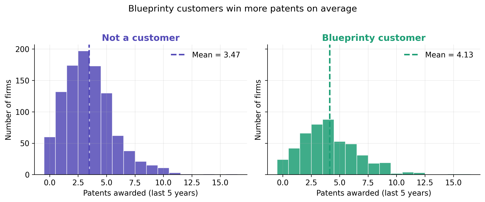
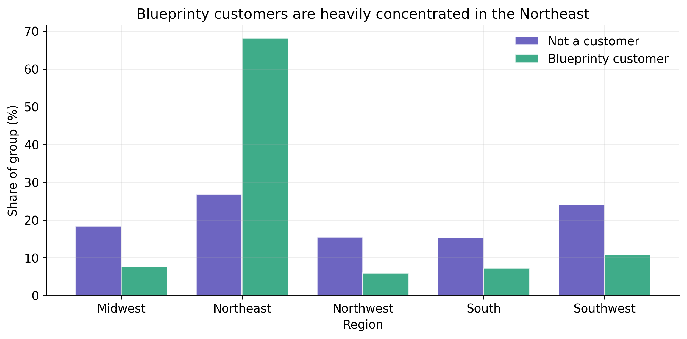
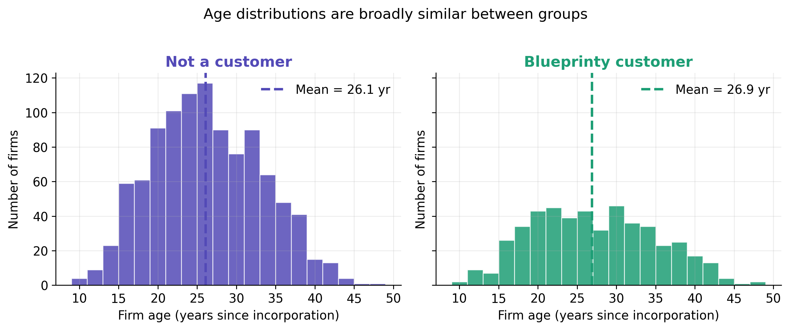
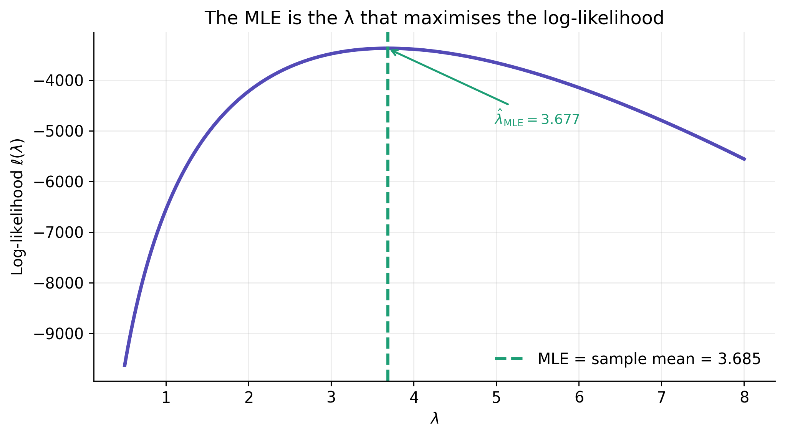
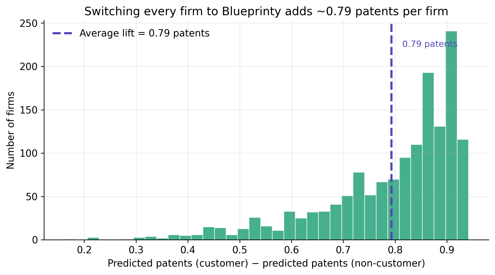

| Patent counts and firm age by customer status | |||||
| Group | Firms (n) | Mean patents | Median patents | SD | Mean age (yr) |
|---|---|---|---|---|---|
| Blueprinty customer | 481 | 4.13 | 4.00 | 2.55 | 26.90 |
| Not a customer | 1,019 | 3.47 | 3.00 | 2.23 | 26.10 |
| Five-year patent count and years since incorporation. | |||||
Poisson Regression and Maximum Likelihood Estimation
A Case Study of Blueprinty’s Software and Patent Awards
Introduction
Blueprinty sells software that helps engineering firms prepare blueprints for patent applications. The company’s marketing team would like to say that firms using Blueprinty are more successful at getting patents awarded. That is a tempting claim because the dataset contains exactly the kind of outcome the company cares about: the number of patents awarded to each firm over the last five years.
The hard part is that this is not an experiment. Ideally, we would observe the same firms before and after adopting Blueprinty, or randomly assign otherwise similar firms to use or not use the software. Instead, we have a cross-sectional sample of 1,500 mature engineering firms. For each firm, we observe its five-year patent count, regional location, age since incorporation, and whether it is a Blueprinty customer. If customers have more patents, that difference could reflect Blueprinty’s software, but it could just as easily reflect who chooses to buy the software. Older firms, firms in innovation-heavy regions, or firms with a pre-existing patent-focused strategy may be more likely to become customers in the first place.
This post works through that problem with a Poisson regression model estimated by maximum likelihood. I start with a simple one-parameter Poisson model, derive and maximize its likelihood by hand, then extend the same logic to a regression that adjusts for firm age and region before estimating the association between Blueprinty customer status and expected patent awards.
Exploring the Data
The raw comparison favors Blueprinty customers. Customers average about 4.13 patents over the five-year window, while non-customers average about 3.47. The difference is visible in the distributions below: the customer histogram (teal) is shifted to the right, with more mass at medium-to-high patent counts.

The difference in patent counts is real, but it is not automatically causal. The next two plots show why adjustment matters.

Customer status is strongly related to geography. About 68% of Blueprinty customers are in the Northeast, compared with only about 27% of non-customers. Customers are also less represented in the Midwest, Northwest, and Southwest than non-customers. If Northeast firms tend to patent more for reasons unrelated to Blueprinty, then a raw customer/non-customer comparison would overstate the software’s effect. If they patent less, the raw comparison could understate it. Either way, region is a potential confounder that must be controlled for.

Age is more balanced than region, but it is still relevant. Customers are slightly older on average, and patenting activity tends to rise with firm experience before eventually leveling off. For that reason, the regression model below includes both age and age squared, allowing the expected patent rate to curve rather than forcing a straight-line age effect.
A Simple Poisson Model via Maximum Likelihood
Patent awards are count data: they are integer-valued and cannot be negative. A Normal model is therefore not a natural starting point — it assigns positive probability to impossible negative counts and treats the outcome as continuous. The Poisson distribution is the standard first model for non-negative integer outcomes. It has a single rate parameter, \(\lambda\), and both its mean and variance equal \(\lambda\).
For one observation \(Y_i \sim \text{Poisson}(\lambda)\),
\[ f(Y_i \mid \lambda) = \frac{e^{-\lambda}\lambda^{Y_i}}{Y_i!}. \]
Assuming the observations are independent and identically distributed, the joint likelihood is the product of the individual probabilities:
\[ L(\lambda \mid Y_1, \ldots, Y_n) = \prod_{i=1}^n \frac{e^{-\lambda}\lambda^{Y_i}}{Y_i!}. \]
The log-likelihood turns that product into a much more tractable sum:
\[ \ell(\lambda) = \sum_{i=1}^n \log\!\left(\frac{e^{-\lambda}\lambda^{Y_i}}{Y_i!}\right) = \sum_{i=1}^n \left[-\lambda + Y_i\log(\lambda) - \log(Y_i!)\right]. \]
The last term, \(\log(Y_i!)\), does not depend on \(\lambda\), but keeping it in the code ensures the function returns the full Poisson log-likelihood rather than a proportional version.
def poisson_loglikelihood(lam, y):
"""Poisson log-likelihood for a scalar lambda and a vector of counts y."""
if lam <= 0:
return -np.inf
return np.sum(y * np.log(lam) - lam - special.gammaln(y + 1))The plot below evaluates this log-likelihood over a grid of plausible \(\lambda\) values. The curve is strictly concave and peaks at a single point — the MLE.
lambda_grid = np.linspace(0.5, 8, 400)
ll_grid = np.array([poisson_loglikelihood(lam, Y) for lam in lambda_grid])
idx_peak = np.argmax(ll_grid)
lambda_peak = lambda_grid[idx_peak]
ll_peak = ll_grid[idx_peak]
fig, ax = plt.subplots(figsize=(8, 4.5))
ax.plot(lambda_grid, ll_grid, linewidth=2.5, color=CLR_NONCUSTOMER)
ax.axvline(Y.mean(), color=CLR_CUSTOMER, linestyle="--", linewidth=2.2,
label=f"MLE = sample mean = {Y.mean():.3f}")
# annotate the peak with an arrow
offset_y = (ll_grid.max() - ll_grid.min()) * 0.08
ax.annotate(
f"$\\hat{{\\lambda}}_{{\\mathrm{{MLE}}}} = {lambda_peak:.3f}$",
xy=(lambda_peak, ll_peak),
xytext=(lambda_peak + 1.3, ll_peak - offset_y * 3),
fontsize=10,
color=CLR_CUSTOMER,
arrowprops=dict(arrowstyle="->", color=CLR_CUSTOMER, lw=1.4),
)
ax.set_xlabel(r"$\lambda$")
ax.set_ylabel(r"Log-likelihood $\ell(\lambda)$")
ax.set_title("The MLE is the λ that maximises the log-likelihood")
ax.legend(frameon=False)
fig.tight_layout()
plt.show()
The curve peaks at \(\lambda \approx 3.685\), exactly where we would expect. Differentiating the log-likelihood confirms this analytically:
\[ \frac{\partial \ell}{\partial \lambda} = \sum_{i=1}^n \!\left(-1 + \frac{Y_i}{\lambda}\right) = -n + \frac{\sum_{i=1}^n Y_i}{\lambda}. \]
Setting this equal to zero and solving gives the closed-form MLE:
\[ \hat{\lambda}_{\text{MLE}} = \frac{1}{n}\sum_{i=1}^n Y_i = \bar{Y}. \]
That result is intuitive: in a Poisson model, \(\lambda\) is the expected count, so the maximum likelihood estimate is simply the observed average count.
simple_result = optimize.minimize_scalar(
lambda lam: -poisson_loglikelihood(lam, Y),
bounds=(1e-8, Y.max() + 5),
method="bounded",
)
simple_mle = simple_result.x
simple_summary = pd.DataFrame({
"Quantity": ["Sample mean $\\bar{Y}$", "Numerical MLE"],
"Value": [Y.mean(), simple_mle],
})
(
GT(simple_summary)
.tab_header(title="Numerical MLE matches the sample mean")
.cols_label(Quantity="", Value="λ estimate")
.fmt_number(columns=["Value"], decimals=6)
.tab_source_note("Optimizer: scipy.optimize.minimize_scalar with bounded method.")
)| Numerical MLE matches the sample mean | |
| λ estimate | |
|---|---|
| Sample mean $\bar{Y}$ | 3.684667 |
| Numerical MLE | 3.684667 |
| Optimizer: scipy.optimize.minimize_scalar with bounded method. | |
The numerical optimizer returns the same answer as the sample mean, up to floating-point rounding. The optimizer is simply searching over possible values of \(\lambda\) and choosing the one that makes the observed patent counts most probable under the Poisson model.
Poisson Regression
The one-parameter model assumes every firm shares the same expected patent count. That is too restrictive here because firms differ in age, region, and customer status. Poisson regression lets each firm have its own rate parameter:
\[ Y_i \sim \text{Poisson}(\lambda_i), \qquad \lambda_i = \exp(X_i'\beta). \]
The exponential function is the inverse link. It matters because \(X_i'\beta\) can be any real number, but \(\lambda_i\) must be positive. Exponentiating guarantees that the predicted expected patent count is always greater than zero, no matter what values the covariates take.
For this model, the log-likelihood is
\[ \ell(\beta) = \sum_{i=1}^n \bigl[Y_i\, X_i'\beta - \exp(X_i'\beta) - \log(Y_i!)\bigr]. \]
The design matrix includes an intercept, age, age squared, region indicators, and the customer indicator. Midwest is the omitted region, so the region coefficients are interpreted relative to Midwest firms. One region must be omitted because the full set of region dummies plus an intercept would be perfectly collinear — the dummies would sum to one, which is identical to the intercept column.
baseline_region = "Midwest"
region_dummies = pd.get_dummies(df["region"], prefix="region", dtype=float)
region_cols = [c for c in region_dummies.columns
if c != f"region_{baseline_region}"]
X_df = pd.DataFrame({
"Intercept": 1.0,
"age": df["age"],
"age_sq": df["age"] ** 2,
})
X_df = pd.concat([X_df, region_dummies[region_cols]], axis=1)
X_df["iscustomer"] = df["iscustomer"].astype(float)
X = X_df.to_numpy(dtype=float)def poisson_regression_loglikelihood(beta, y, X):
"""Poisson regression log-likelihood for parameter vector beta."""
eta = X @ beta
mu = np.exp(eta)
return np.sum(y * eta - mu - special.gammaln(y + 1))
def neg_loglikelihood(beta, y, X):
return -poisson_regression_loglikelihood(beta, y, X)
def neg_gradient(beta, y, X):
"""Analytic gradient of the negative log-likelihood."""
mu = np.exp(X @ beta)
return X.T @ (mu - y)
def neg_hessian(beta, y, X):
"""Analytic Hessian of the negative log-likelihood (= X'WX)."""
mu = np.exp(X @ beta)
return X.T @ (X * mu[:, None])I maximize the log-likelihood by minimizing the negative log-likelihood. Because I have analytic expressions for both the gradient and Hessian, I use a trust-region Newton method rather than relying only on a numerical approximation to the curvature. After estimating \(\hat\beta\), standard errors come from the curvature of the log-likelihood at the optimum. At the MLE, the Hessian of the negative log-likelihood is \(X'WX\), where \(W\) has the fitted means \(\hat\mu_i\) on the diagonal. The covariance matrix of \(\hat\beta\) is therefore \((X'WX)^{-1}\), and the standard errors are its diagonal square roots.
initial_beta = np.zeros(X.shape[1])
initial_beta[0] = np.log(Y.mean()) # warm start: intercept ≈ log(mean)
mle_result = optimize.minimize(
neg_loglikelihood,
initial_beta,
args=(Y, X),
method="trust-ncg",
jac=neg_gradient,
hess=neg_hessian,
options={"gtol": 1e-8, "maxiter": 10_000},
)
beta_hat = mle_result.x
hessian_at_mle = neg_hessian(beta_hat, Y, X)
vcov_hat = np.linalg.inv(hessian_at_mle)
se_hat = np.sqrt(np.diag(vcov_hat))
gradient_inf_norm = np.linalg.norm(neg_gradient(beta_hat, Y, X), ord=np.inf)The trust-region optimizer reports successful convergence, and the largest absolute gradient component at the solution is essentially zero. This is a useful diagnostic: it means the solution is not merely close to the GLM answer, but also satisfies the first-order conditions for the hand-coded likelihood.
| MLE optimization diagnostics | |
| Diagnostic | Value |
|---|---|
| Optimizer | scipy.optimize trust-ncg |
| Converged? | True |
| Iterations | 21 |
| Largest |gradient| component | 3.30e-09 |
| Negative log-likelihood | 3258.072145 |
| Poisson regression results | |||||
| Hand-coded MLE cross-checked against statsmodels GLM | |||||
| Term | Hand-coded MLE | GLM cross-check | Rate ratio | ||
|---|---|---|---|---|---|
| Coef. | Std. error | Coef. | Std. error | ||
| Intercept | −0.5089 | 0.1832 | −0.5089 | 0.1832 | 0.601 |
| Age | 0.1486 | 0.0139 | 0.1486 | 0.0139 | 1.160 |
| Age² | −0.0030 | 0.0003 | −0.0030 | 0.0003 | 0.997 |
| Northeast | 0.0292 | 0.0436 | 0.0292 | 0.0436 | 1.030 |
| Northwest | −0.0176 | 0.0538 | −0.0176 | 0.0538 | 0.983 |
| South | 0.0566 | 0.0527 | 0.0566 | 0.0527 | 1.058 |
| Southwest | 0.0506 | 0.0472 | 0.0506 | 0.0472 | 1.052 |
| Blueprinty customer | 0.2076 | 0.0309 | 0.2076 | 0.0309 | 1.231 |
| Midwest is the omitted region. Standard errors are from the inverse analytic information matrix at the MLE. The hand-coded MLE and GLM values match up to numerical precision. | |||||
The hand-coded MLE estimates match the built-in Poisson GLM estimates almost exactly — both procedures maximize the same log-likelihood, so they should converge to the same point. The standard errors also match up to numerical precision because both are based on the same information matrix at the MLE. In the canonical Poisson GLM, the Hessian of the negative log-likelihood is \(X'WX\), so the usual GLM information matrix and the analytic Hessian used here are the same object evaluated at \(\hat\beta\).
The customer coefficient (highlighted in the table) is the most important estimate for Blueprinty’s question. It is positive, about 0.208, and its rate ratio is \(\exp(0.208) \approx 1.231\). Holding age and region fixed, Blueprinty customers are estimated to have an expected patent count about 23% higher than comparable non-customers.
The age terms also make sense, but they need to be interpreted together rather than one at a time. The positive age coefficient and negative age-squared coefficient imply a concave relationship: expected patenting rises with firm age at first, peaks around 25 years since incorporation, and then gradually tapers off. The region coefficients are comparatively small after controlling for age and customer status.
The Effect of Blueprinty’s Software
Poisson regression coefficients live on the log scale, so they are not directly measured in “additional patents.” To translate the customer coefficient into patent counts, I construct two counterfactual datasets:
- \(X_0\): every firm is treated as a non-customer, while its age and region remain unchanged.
- \(X_1\): every firm is treated as a Blueprinty customer, while its age and region remain unchanged.
Then I predict each firm’s expected patent count under both scenarios and average the firm-level differences.
X0_df = X_df.copy(); X0_df["iscustomer"] = 0.0
X1_df = X_df.copy(); X1_df["iscustomer"] = 1.0
pred_y0 = np.exp(X0_df.to_numpy(dtype=float) @ beta_hat)
pred_y1 = np.exp(X1_df.to_numpy(dtype=float) @ beta_hat)
firm_effects = pred_y1 - pred_y0
ate = firm_effects.mean()
cf_df = pd.DataFrame({
"scenario": [
"All firms treated as non-customers",
"All firms treated as Blueprinty customers",
"Average difference",
],
"patents": [pred_y0.mean(), pred_y1.mean(), ate],
})
(
GT(cf_df)
.tab_header(title="Counterfactual expected patent counts")
.cols_label(scenario="Scenario", patents="Expected patents / firm")
.fmt_number(columns=["patents"], decimals=3)
.tab_style(
style=[style.text(weight="bold"), style.fill(color="#E1F5EE")],
locations=loc.body(rows=[2]),
)
.tab_source_note(
"Each firm's age and region are held fixed at observed values; "
"only customer status is toggled."
)
)| Counterfactual expected patent counts | |
| Scenario | Expected patents / firm |
|---|---|
| All firms treated as non-customers | 3.436 |
| All firms treated as Blueprinty customers | 4.229 |
| Average difference | 0.793 |
| Each firm's age and region are held fixed at observed values; only customer status is toggled. | |

The model estimates that making every firm a Blueprinty customer — while holding each firm’s age and region fixed — would increase expected patent awards by about 0.79 patents per firm over five years. In relative terms that is the same customer rate ratio from the regression table: expected patent counts are about 23% higher for customers than for otherwise comparable non-customers.
That result is evidence consistent with Blueprinty’s marketing claim, but it should be stated carefully. The analysis controls for observed age and region, and after those adjustments the customer association remains positive and sizable. However, the data are observational. If Blueprinty customers differ from non-customers in unobserved ways — for example, if they have larger R&D budgets, better legal teams, or a stronger pre-existing patent strategy — then some of the estimated customer effect could reflect those omitted factors rather than the software itself.
A fair conclusion is therefore: firms using Blueprinty’s software have higher expected patent counts in this dataset, even after adjusting for age and region. The model supports the marketing story, but it does not prove a causal effect with the same strength as a randomized experiment or a before-and-after study of adoption.